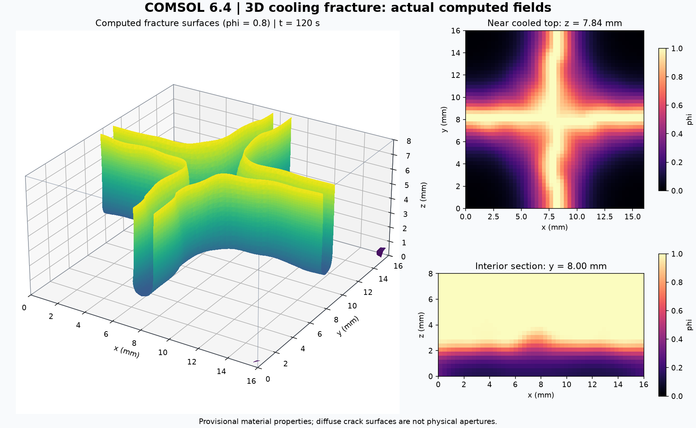
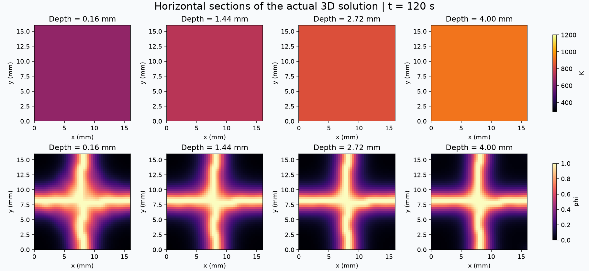
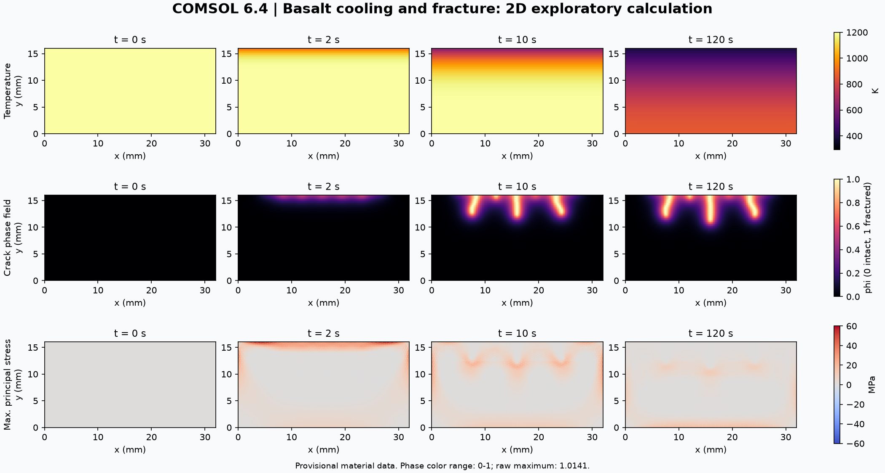
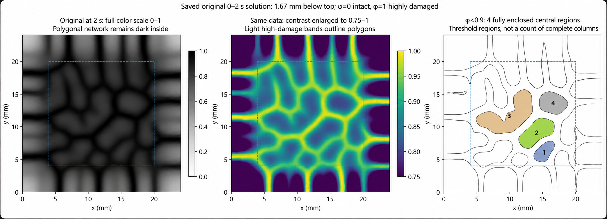

Cooling fracture in basalt
Model
COMSOL cooling-fracture models: a 2D thermal-shock prototype, a continuous 0–120 s 3D case and a separate early network pilot. Natural hexagonal column formation is not yet validated.
Scope & limitations

Results
In the 16 × 16 × 8 mm continuous case, two near-orthogonal crack families extend from the cooled top. The sampled, top-connected φ > 0.8 depth reaches approximately 5.6 mm at 120 s.
Top-connected damage depth
Continuous 3D case · φ > 0.8 · 41 saved outputs
Top-connected φ > 0.8 depth:

The two-dimensional starting point
The earlier 32 × 16 mm plane-stress case tests the cooling–stress–fracture chain. Under strong cooling it produces three main damage bands that extend roughly 5 mm from the cooled surface.

A separate 0–2 s pilot: polygonal localisation
A later pilot forms a polygonal high-damage network in three dimensions. However, damage inside the candidate regions remains high. At approximately 1.67 mm below the top, four central threshold-enclosed regions appear at φ < 0.9; these are threshold-dependent connected regions, not a count of intact columns.

Scope & limitations
Methods
The continuous 3D case couples heat transfer, thermoelasticity and AT1 phase-field fracture. It uses top convection, insulated sides and a hot lower boundary. The early polygonal-network pilot instead prescribes an analytical cooling field.
Depth diagnostics use sampled φ thresholds and connectivity to the uppermost exported layer. They depend on threshold, interpolation and mesh.
| Domain | 16 × 16 × 8 mm |
|---|---|
| Initial / ambient temperature | 1200 / 293 K |
| Top heat-transfer coefficient | 400 W m⁻² K⁻¹ |
| Young's modulus / fracture energy | 50 GPa / 100 J m⁻² · provisional values |
| Internal length / numerical viscosity | 0.8 mm / 0.2 s |
| Mesh / solved degrees of freedom | 16,384 hexahedral elements / 92,565 |
| Platform | COMSOL Multiphysics 6.4 · Java API · Python post-processing |
Scope & limitations
Data & model files
The model package contains source definitions, not solved MPH files or the full raw field archive. Read the original documentation and adapt any retained local output paths before rebuilding. The later pilot continuation is excluded from this package.